AI-Assisted Inbound
Qualification & Operations System
An integrated inbound system combining AI-assisted inquiry qualification, structured data capture, middleware orchestration, CRM synchronization, and multi-channel notifications to reduce manual intake work.
Executive Summary & Implementation Scope
B2B service firms frequently suffer from fragmented inbound intake. Prospective clients arrive with varying degrees of clarity: some need a structured scope evaluation, while others have conversational questions regarding platform architecture or CRM compatibility. When inbound intake is unassisted, manual review creates communication delays, unqualified inquiries enter sales pipelines, and follow-up data must be manually transcribed into records.
This system solves that operational bottleneck through a dual-path inbound framework:
A static evaluation form at /audit capturing contact details, technology stack, and business bottlenecks directly into the middleware ingestion pipeline.
A conversational interface running on the primary website that answers platform capabilities, evaluates workflow friction, and surfaces an in-chat qualification card.
System Infrastructure & Integration Map
The system architecture separates client runtime code from secret credentials and downstream automation. Browser-side scripts never communicate directly with upstream foundation model APIs or downstream CRM endpoints. All inference requests route through a private serverless proxy on Vercel, while form payloads route through middleware automation on Make.com. Click the diagram below to inspect in high resolution:
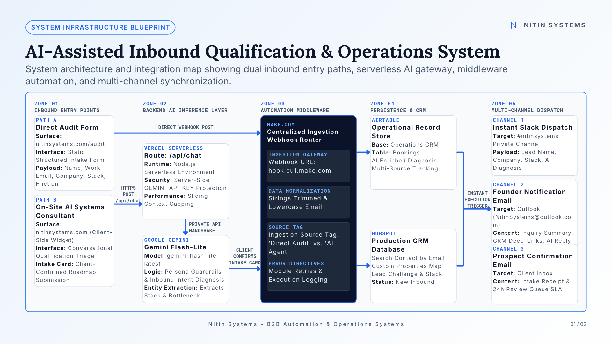
The endpoint at /api/chat executes in a private Node.js serverless environment. The Gemini API secret key resides strictly within environment variables and is never exposed in browser network inspection.
The proxy function maintains a fallback array including gemini-flash-lite-latest and secondary candidate identifiers with an AbortController timeout guard to handle upstream service interruptions.
Operational Workflow & Lead Lifecycle
The operational lifecycle follows incoming data from initial visitor discovery through to executive review. Regardless of whether an inquiry originates from the direct audit form or the AI qualification card, all inbound data converges into a single, standardized JSON payload structure before downstream distribution. Click the diagram below to inspect in high resolution:
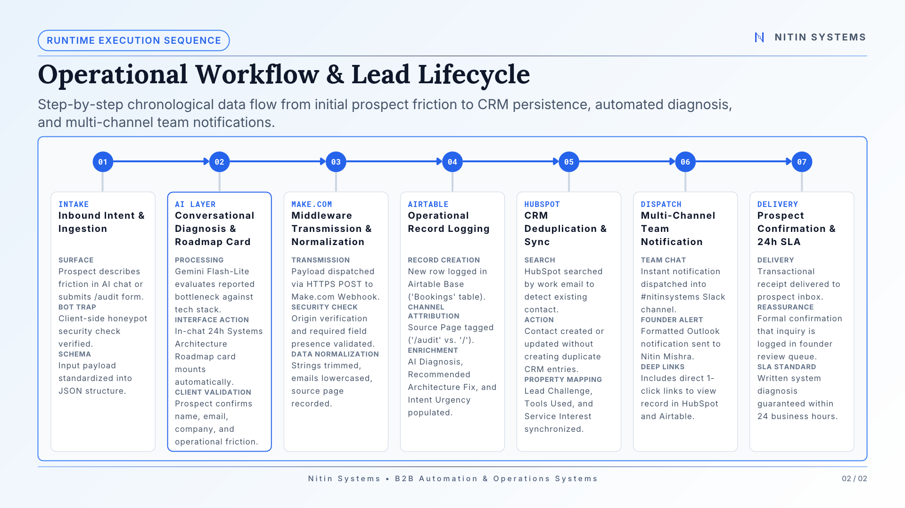
- Visitor Inbound: Prospect engages with either Path A (direct audit form) or Path B (interactive AI consultant).
- Standardized Payload: Client code packages prospect parameters, technology stack details, and formatted consultation history.
- Middleware Webhook Ingestion: Make.com scenario validates incoming fields and manages duplicate request prevention.
- Structured Record Logging: New lead event logged in Airtable master store with source attribution and verbatim transcript.
- CRM Contact Synchronization: HubSpot contact upserted with custom properties including business type, lead challenge, and current tools.
- Multi-Channel Alerting: Notification dispatched to internal Slack channel, detailed alert sent to founder Outlook inbox, and confirmation email delivered to prospect.
System Build & Operations Evidence Showcase
To verify operational reliability, each phase of the architecture has been tested end-to-end on the live site. The twelve evidence screenshots below document the system across three operational categories: visitor capture, middleware synchronization, and downstream alerting. Click any screenshot to open the high-resolution lightbox inspector:
Tier 1: Inbound Capture & Visitor Experience
6 ASSETSCaptures visitor requirements through two entry mechanisms: the interactive conversational AI interface and the structured audit intake form.
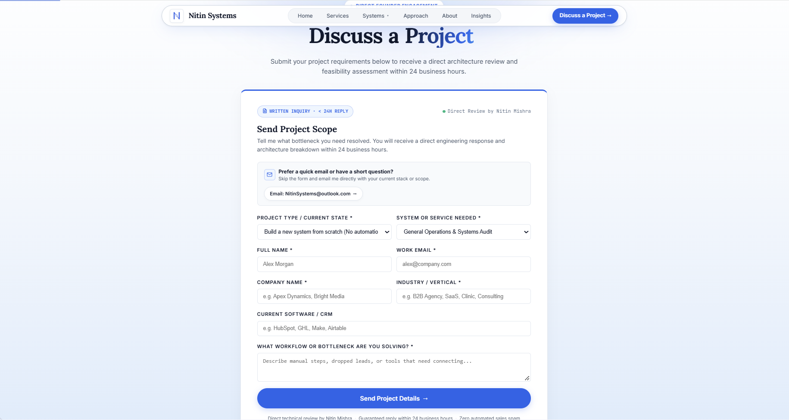
Structured direct intake surface capturing prospect details, operational bottleneck, and technology stack at /audit.
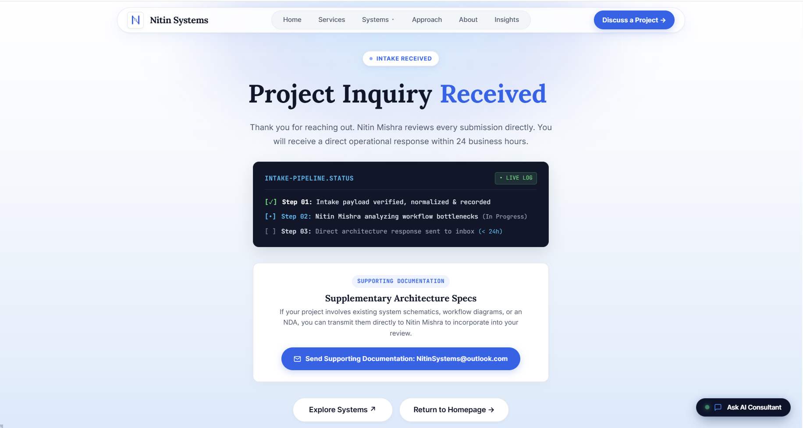
The dedicated confirmation surface displayed when visitors submit inquiries through the direct static form at /audit.
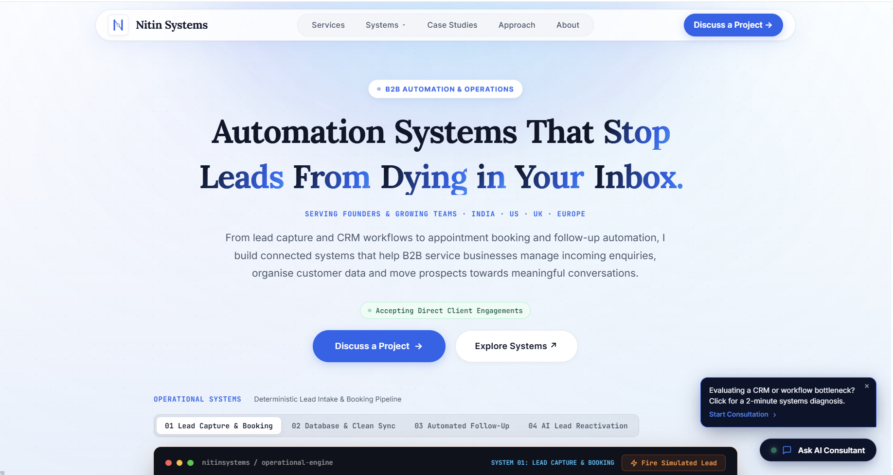
Non-intrusive floating invitation bubble positioned after visitor engagement on the main site canvas.
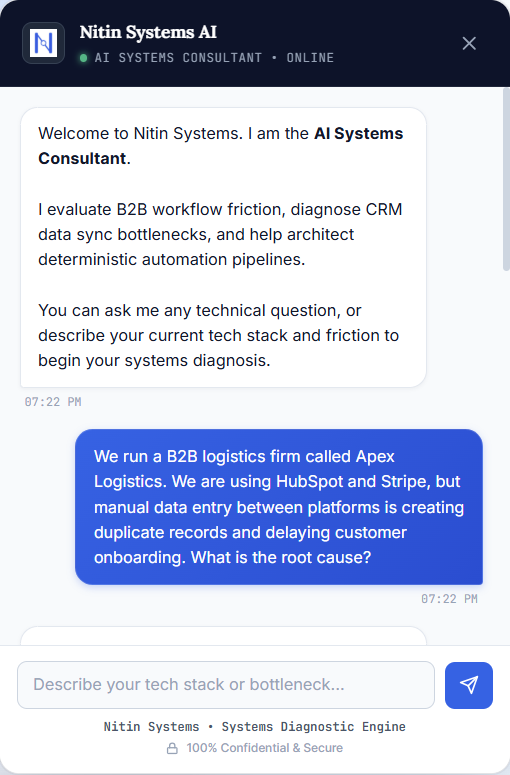
Concise, non-generic consultation answering visitor inquiries regarding platform compatibility and data flow.
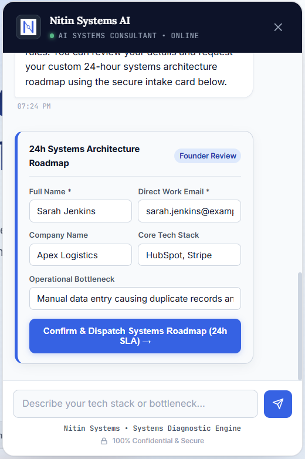
In-chat form allowing prospects to submit contact information, technology stack, and business challenges.
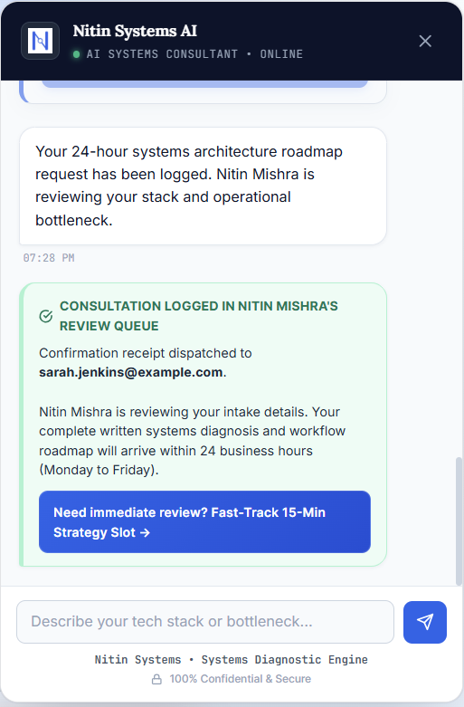
In-modal receipt confirming successful transmission to the middleware webhook and setting review expectations.
Tier 2: Pipeline Orchestration & Data Synchronization
3 ASSETSDemonstrates automated ingestion, record creation in the operational database, and property synchronization in the primary CRM.
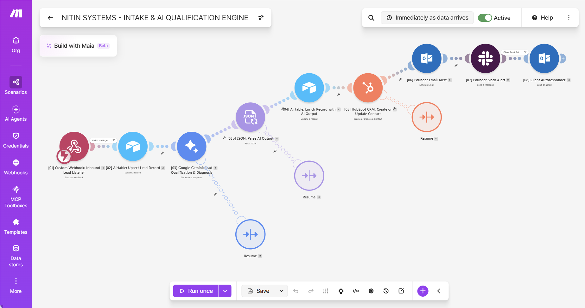
Verified execution checkmarks across all scenario modules including webhook listening, record lookup, and branching routers.
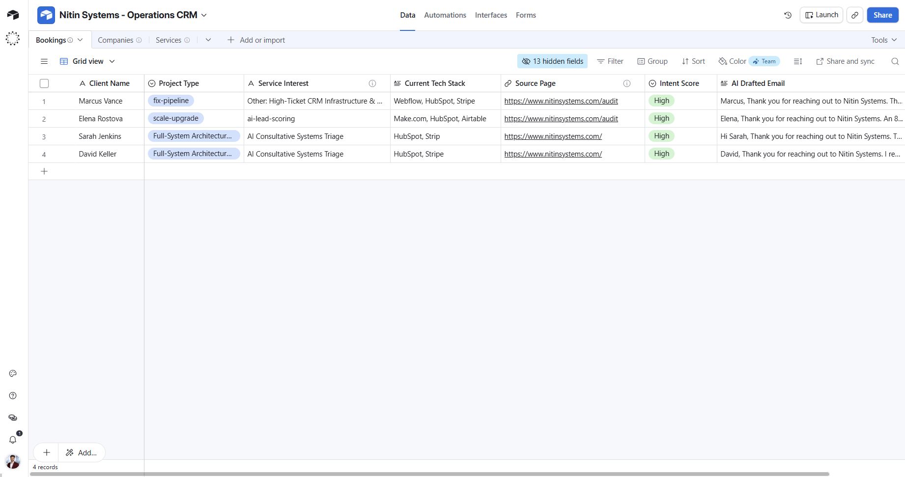
Documents 4 test records successfully captured with complete source attribution, technology stack attributes, and interaction transcripts.
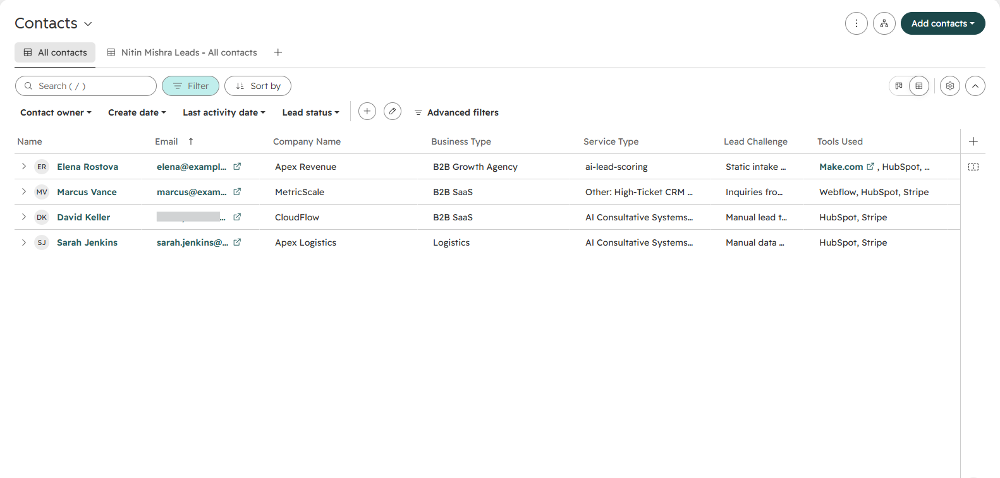
Verifies contact records upserted in HubSpot with custom property mapping (Business Type, Service Interest, Current Stack, Lead Bottleneck).
Tier 3: Multi-Channel Dispatch & Communication
3 ASSETSShows automated communication dispatch across internal team channels, founder review inbox, and external prospect confirmations.
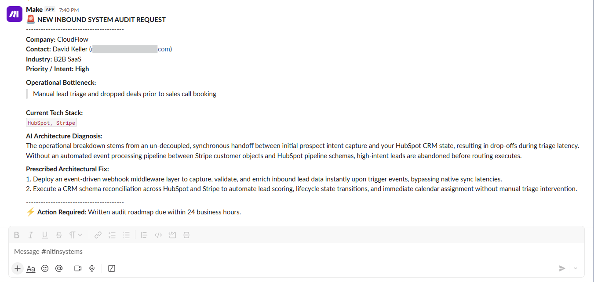
Automated message posted to the #nitinsystems channel displaying parsed lead parameters, source page, and technology stack.
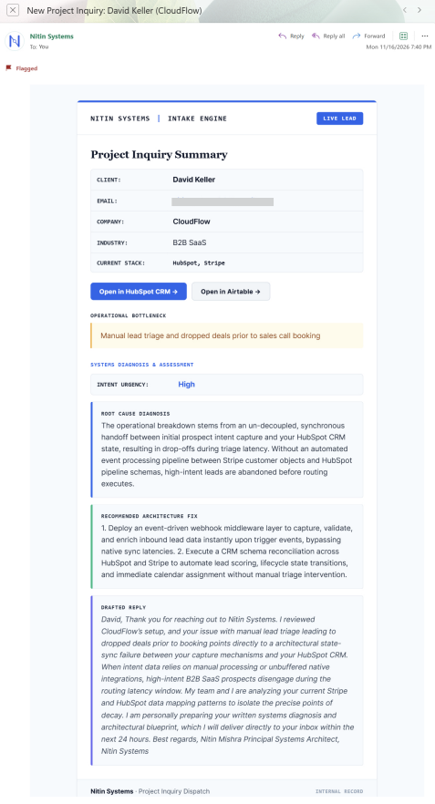
Detailed Outlook email alert containing full prospect parameters, Airtable deep link, and pre-drafted consultation reply.
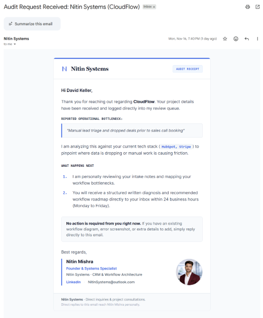
Automated branded receipt delivered to the prospect confirming receipt of their inquiry and communicating a 24-hour review expectation.
System Boundaries, Error Handling & Governance
Reliable B2B automation requires clear operational boundaries and fallback mechanisms. The system relies on five governance controls to ensure data integrity, API resilience, and controlled AI output:
Conversation context sent to the model is capped to the 6 most recent messages (3 visitor messages + 3 assistant responses) while keeping the master system prompt intact. This eliminates token accumulation and keeps model processing latency bounded.
The Google Gemini API key is isolated inside server-side environment variables on Vercel. Browser clients only communicate with the local /api/chat route, preventing secret exposure.
The proxy function implements an AbortController timeout guard. If the primary model endpoint experiences network stalls, the gateway gracefully attempts secondary candidate IDs before returning structured error codes.
Browser form submissions pass standard field validation (email format, non-empty text constraints, client-side idempotency keys) before dispatching to the Make.com webhook endpoint.
The AI consultant assists with qualification and structures incoming requirements, but does not commit to client pricing, scope agreements, or contracts. Final commercial evaluations and proposal decisions remain strictly with the founder.
Operational Verification & Evidence Summary
The system has been evaluated using live submissions through both entry surfaces on nitinsystems.com. The table below delineates verified functional behaviors from operational boundaries:
| Functional Layer | Verified Implementation Evidence | Operational Boundary & Scope |
|---|---|---|
| Inbound Capture | Two separate entry paths: static audit form (/audit) and interactive on-site AI widget. | Path A terminates on /thank-you-page; Path B renders an in-chat receipt card. |
| AI Consultation | Answers systems inquiries concisely; surfaces structured intake card upon qualification. | Assists with qualification; does not finalize pricing or execute service contracts. |
| Middleware Ingestion | Make.com scenario successfully parses payloads and triggers multi-destination routes. | Payload execution verified on documented test runs; not measured under high-volume stress. |
| Database Logging | Four test records successfully created in Airtable with source attribution. | Demonstrates multi-source capture; does not constitute long-term performance telemetry. |
| CRM Synchronization | HubSpot contacts synchronized with custom property mapping (Stack, Friction, Service). | Structured field mapping executed during test suite; manual field validation retained. |
| Internal Alerts | Automated Slack message in #nitinsystems and detailed founder notification email in Outlook. | Triggered on successful webhook execution; delivery dependent on third-party service uptime. |
| Prospect Communication | Automated branded confirmation email delivered to prospect inbox with 24h review expectation. | Communicates a stated operational review target, not an automated SLA contract. |
Choose How You Want to Explore This Build
Review the concise visual slide deck or inspect the full case study document.
Production Build Proof
A visual walkthrough of the AI inbound qualification system architecture, serverless gateway, Make.com orchestration, and live verified test receipts.
- • Vercel serverless gateway & Gemini proxy
- • Make.com scenario & Airtable state store
- • HubSpot CRM sync & multi-channel alerts
Full System Case Study
The comprehensive 18-page engineering case study detailing problem framing, dual-entry intake architecture, security boundaries, and verified receipts.
- • End-to-end architecture & data flow
- • Operational state store & verification lifecycle
- • Prompt injection defense & engineering rules
Explore All Production Systems & Blueprints
Browse our centralized library of production lead intake engines, AI consultation workflows, CRM automations, and operational delivery blueprints.
Need an AI-assisted qualification & operations pipeline?
I can engineer a custom serverless AI gateway, middleware ingestion scenario, and clean CRM synchronization for your business.